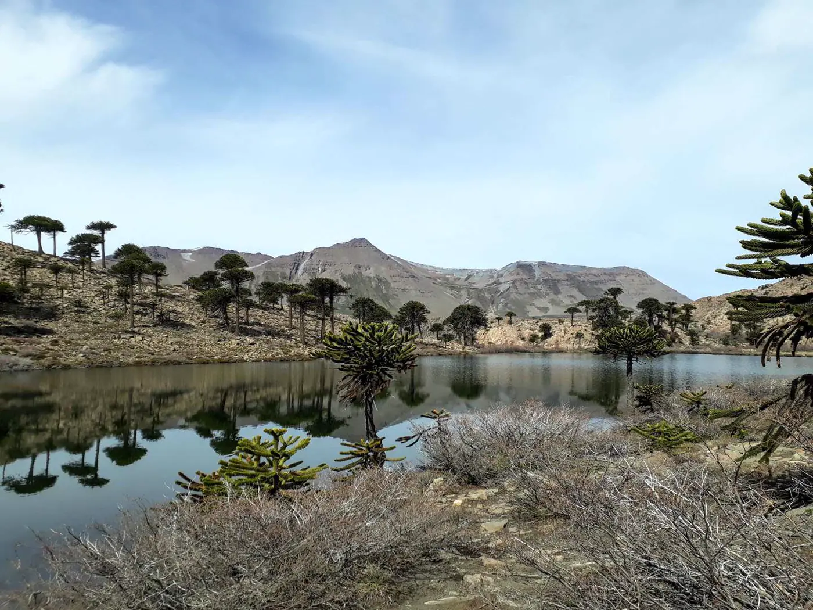

Laguna Escondida en Caviahue

1 / 3
Caviahue y alrededores · Verano
Una laguna rodeada de araucarias a pocos minutos del centro, ideal para una tarde tranquila.
Una caminata corta lleva a esta laguna de montaña, donde las araucarias se reflejan en el agua quieta. Es un buen lugar para hacer un picnic, mirar aves o simplemente descansar.
Ubicación
Laguna Escondida
Ver ubicación en Google MapsTu lugar en Caviahue
Casas, cabañas, departamentos y hostal boutique para disfrutar de la Patagonia con tu familia, amigos o pareja. Reservá online o por WhatsApp.